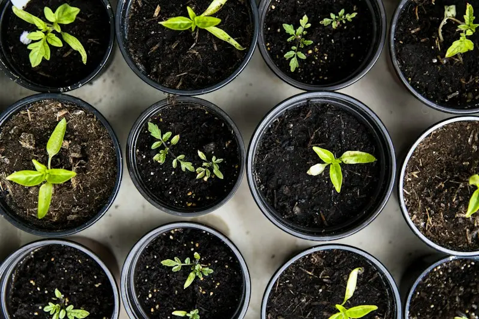
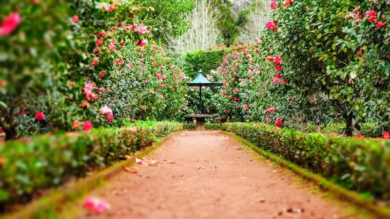
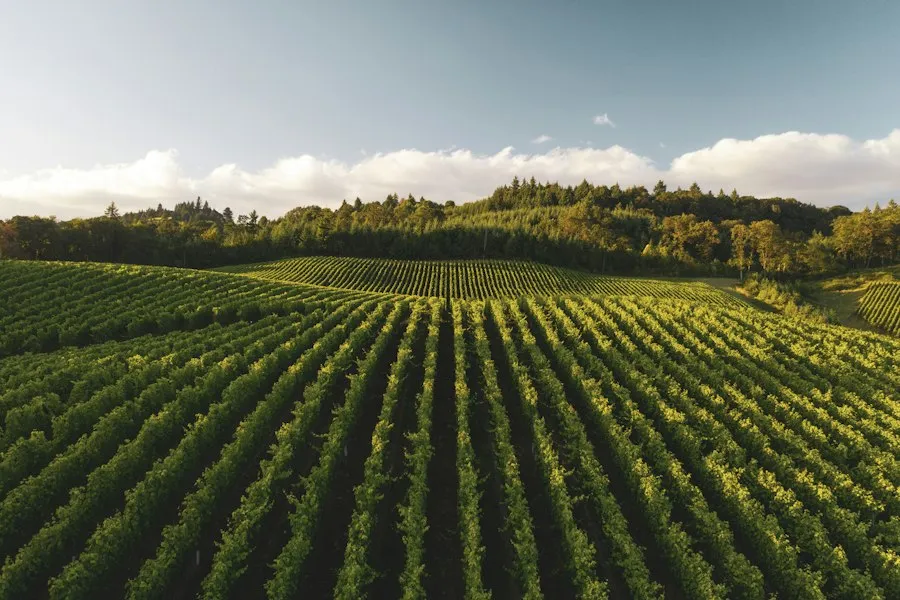

Complete Solutions For Modern Agronomy
We support agricultural enterprises across the entire lifecycle: soil regeneration, crop telemetry, organic pest barriers, and cold-chain wholesale distribution.
Explore Our Specialized Agricultural Domains
Each service operates with empirical scientific rigor and full traceability.

1. Organic Crop Production
Non-GMO heirloom seeds cultivated in multi-tier microbial bio-soils with zero synthetic nitrogen or pesticides. We specialize in wheat, millet, heirloom vegetables, and medicinal botanical crops.
Learn More About Crops ➔
2. Precision Smart Farming
Harnessing multispectral satellite vegetative indices (NDVI), drone mapping, and LoRaWAN soil moisture probes to optimize water delivery and detect plant stress 10 days before visible symptoms appear.
Explore Precision Agtech ➔
3. Ethical Livestock Management
Rotational pasture grazing, veterinary health profiling, and holistic animal welfare producing premium certified A2 whole milk, organic ghee, and artisan aged cheeses.
Explore Livestock Care ➔4. Direct Produce Supply Chain
From on-field harvest dispatch to solar refrigerated transport and wholesale distribution hubs. Real-time temperature tracking and instant laboratory certificates for institutional buyers.
Explore Supply Chain ➔Solar Micro-Drip Irrigation Systems
Water is agriculture's most precious resource. Our automated solar-powered irrigation infrastructure delivers precise drops directly to crop root zones, reducing evaporative loss by up to 64% while maintaining optimum hydraulic tension.
Valves open only when soil water potential drops beneath root uptake thresholds.
100% solar PV pump array operating autonomously during peak daylight hours.

Native Apiary Sanctuaries & Wildflower Corridors
Healthy bees signify healthy soil. Stackly preserves dedicated wildflower corridors and maintains 350+ native honeybee colonies across our farming plots.
The result is a double blessing: cross-pollination enhances fruit set density by up to 35%, while yielding our coveted raw mountain wildflower honey batches.
Learn About Apiary Protocols ➔Certified To Global Agricultural & Food Safety Standards
Every acre under Stackly management undergoes rigorous third-party auditing.
NPOP Certified
National Programme for Organic Production compliance across all crops.
USDA Organic
Certified equivalent for direct export and international food manufacturing.
ISO 22000
HACCP-based food safety management throughout cold storage and transit.
Water Stewardship
Alliance for Water Stewardship Gold rating for micro-basin conservation.